Reactive Programming
with RxJava
CADEC 2017 - Pär Wenåker, Anders Asplund
Agenda
- What and why
- RxJava
- Future
What is reactive programming?
Creator of Reactive Extensions @ Microsoft
https://youtu.be/sTSQlYX5DU0?t=173
"I have absolutely no f***ing clue!"
Attempt of definition
Reactive Programming Model
- Asynchronous and non-blocking applications.
- Functional in style.
- Readable and composable APIs.
- Handles asynchronous streams of data.
Why?
- Distributed applications (microservices)
- Cloud environments
- Streaming Big Data
- Internet of Things
Better resource utilisation

Example Service
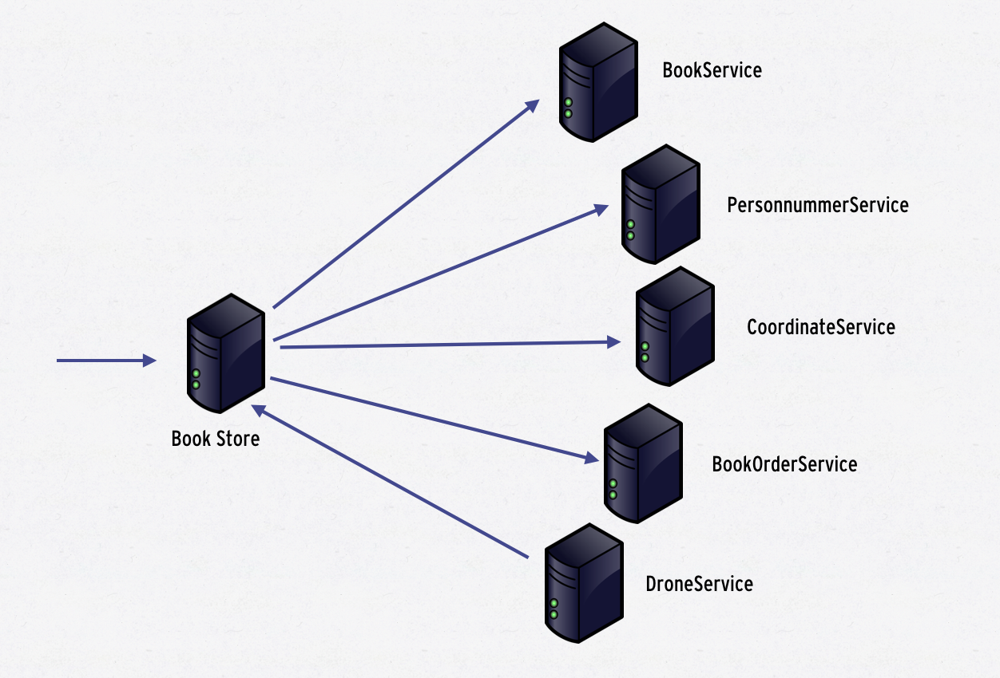Example Service
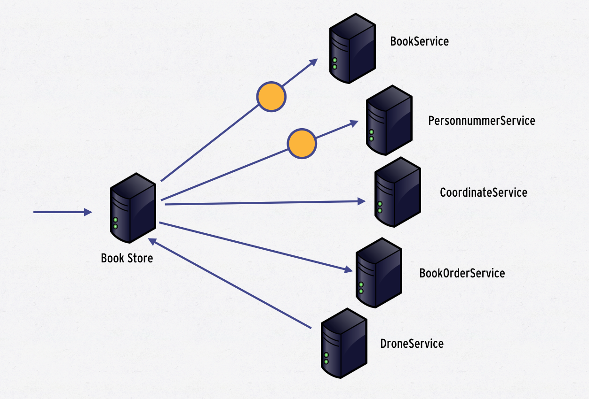Example Service
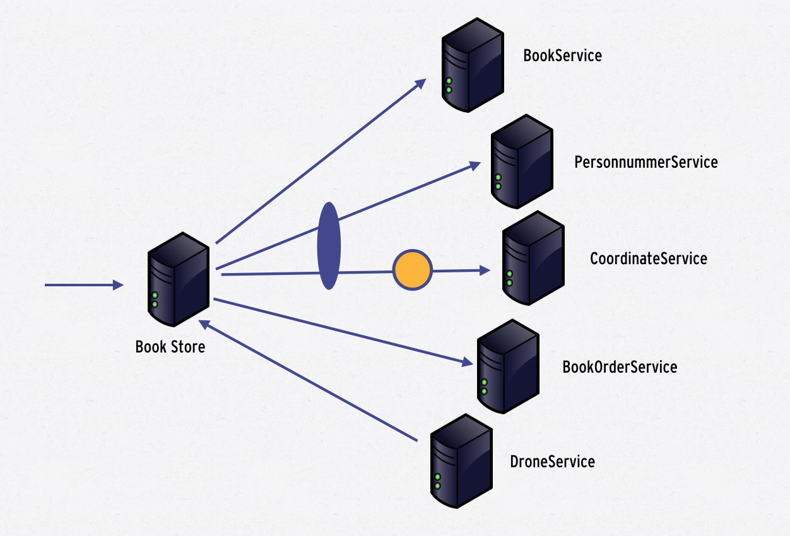Example Service
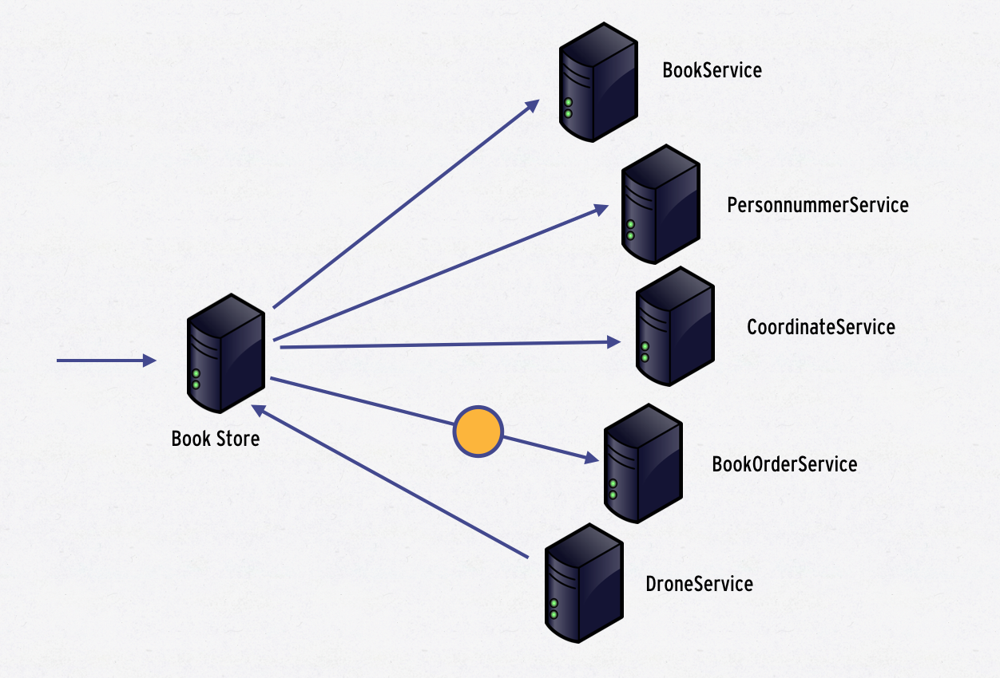Example Service
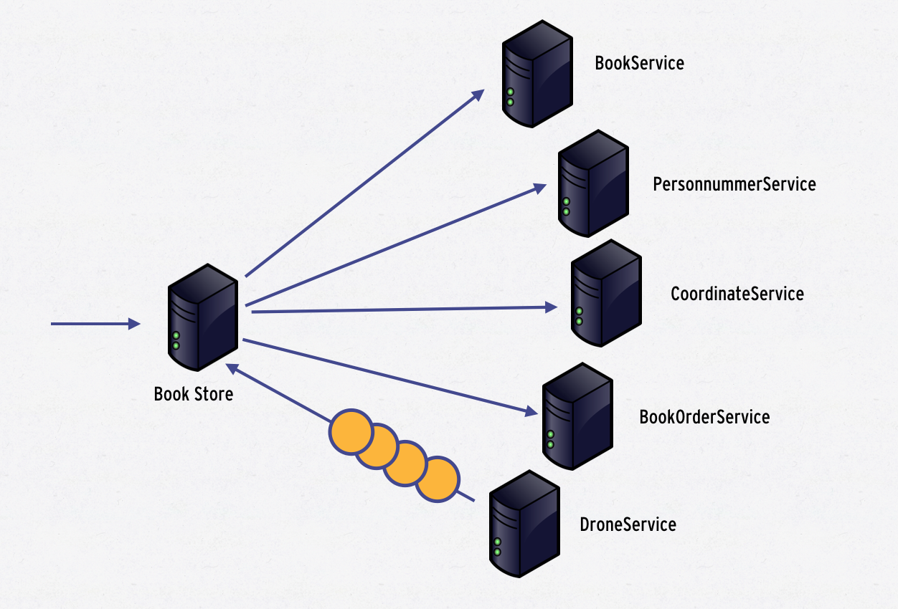Asynchronous code pre Java 1.8
Future<Response> f = httpClient.get("http://www.gp.se/");
Response r = f.get(); // Blocking!!!
Not Asychronous!!
Asynchronous call with callback
httpClient.get("http://www.gp.se", response -> {
/* Handle response */
});
Multiple asynchronous calls with callback
httpClient.get("http://www.gp.se", response -> {
/* Handle response */
});
httpClient.get("http://www.dn.se", response -> {
/* Handle response */
});Needs state machine...
Asynchronous call with callback
State state = ...;
httpClient.get("http://www.gp.se", response -> {
state.addGp(response);
});
httpClient.get("http://www.dn.se", response -> {
state.addDn(response);
});Needs synchronization!!
Asynchronous call with callback
State state = ...;
httpClient.get("http://www.gp.se", response -> {
synchronized(state) {
state.addGp(response);
}
});
httpClient.get("http://www.dn.se", response -> {
synchronized(state) {
state.addDn(response);
}
});Let's add some error handling....
The problem is...
- "Void returning functions"
- Mutable state
"Code that deals with more than one event or asynchronous computation gets complicated quickly as it needs to build a state-machine to deal with ordering issues.
Next to this, the code needs to deal with successful and failure termination of each separate computation. This leads to code that doesn’t follow normal control-flow, is hard to understand and hard to maintain."
http://go.microsoft.com/fwlink/?LinkID=205219
Reactive Programming to rescue!!
Disclaimer 1
Is not easy and has a significant learning curve!
Disclaimer 2
Requires a shift from imperative programing to asynchronous, non-blocking and functional style.
Do not rely on side-effects and mutable state!
Observable<Tweets> twitterFirehose = ...
twitterFirehose
.sample(5, MILLISECONDS)
.filter(t -> hasImage(t))
.flatMap(t -> getImage(t.image))
.publish()
tweets.subscribe(/* Do something */);
tweets.subscribe(/* Do something else */);
Java 1.8 CompletableFutures
CompletableFuture<Response> response1 =
httpClient.get("http://www.gp.se");
CompletableFuture<Response> response2 =
httpClient.get("http://www.gp.se");
CompletableFuture<State> state =
response1.thenCombine(response2,
(value1, value2) -> f(value1, value2)
);
state.thenAccept(s -> /* Handle result */)
.exceptionally(/*Handle error*/ return errorStatus; });
RxJava
Observable<Response> resp1 = httpClient.get("http://gp.se");
Observable<Response> resp2 = httpClient.get("http://dn.se");
Observable<Status> status =
resp1.zipWith(r2, (r1,r2) -> f(r1,r2))
.onErrorReturn(t -> {/*Handle error*/ return errorStatus; });
status.subscribe(/* Handle result */)
Container for the future value.
- Observable
- CompletableFuture
Method on the Container for manipulating the future value.
- zipWith
- thenApply
- thenAccept
- onError
- etc.
Streams
CompletableFuture handles only one element!
Observables!
An Observable is...
a combination of the iterator and observer patterns!
Iterator pattern
- Retreive data => next()
- Complete => hasNext()
- Error => throws Exception
PULL BASED
Observer pattern
- Register Observer with Subject
- Subject pushes data to Observer
- Complete & Error???
PUSH BASED
Observable pattern
- Register Observer with Observable (subject)
- Observable pushes data to the Observer with onNext()
- Observable signals end of data with onComplete()
- Observable signals errors with onError()
PUSH BASED
Example 1
Observable<Integer> obs = Observable.create(observer -> {
observer.onNext(1);
observer.onNext(2);
observer.onComplete();
});
println("Before subscribe")
obs.subscribe(v -> println(v));
println("After subscribe")
Thread[main,5,main] : Before subscribe
Thread[main,5,main] : 1
Thread[main,5,main] : 2
Thread[main,5,main] : After subscribe
Example 2
Observable<Integer> obs = Observable.create(observer -> {
new Thread(() -> {
observer.onNext(1);
observer.onNext(2);
observer.onComplete();
}).start();
});
println("Before subscribe")
obs.subscribe(v -> println(v));
println("After subscribe")
Thread[main,5,main] : Before subscribe
Thread[main,5,main] : After subscribe
Thread[Thread-0,5,main] : 1
Thread[Thread-0,5,main] : 2
Don't do this...
Example 3
Observable<Response> obs = Observable.create(observer -> {
httpClient.get("http://www.gp.se", response -> {
observer.onNext(response);
observer.onComplete();
});
});
obs.subscribe(response -> /* Handle output */);Single
Single<Response> obs = Single.create(observer -> {
httpClient.get("http://www.gp.se", response -> {
observer.onSuccess(response);
});
});
obs.subscribe(response -> /* Handle output */);| Single | Multiple | |
| Synchronous | T get() | Iterator<T> |
| Asynchronous | Future<T> | Observable<T> |
Java8 Streams?
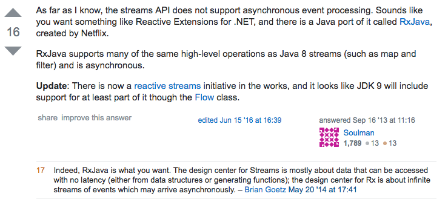http://bit.ly/2hU6wdA
– Brian Goetz
Marble Diagram
Terminates with onComplete
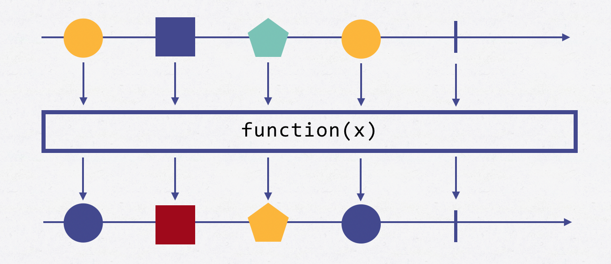Marble Diagram
Terminates with onError
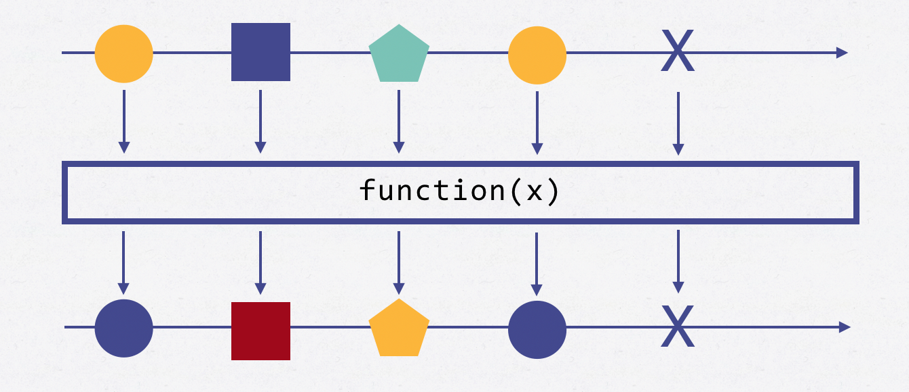Marble Diagram Filter
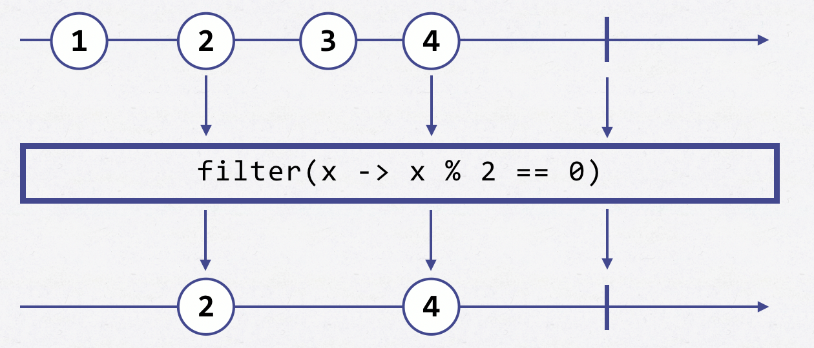
Observable<Integer> obs1 = ...
Observable<Integer> obs2 = obs1.filter(x -> x%2 == 0)Marble Diagram Map
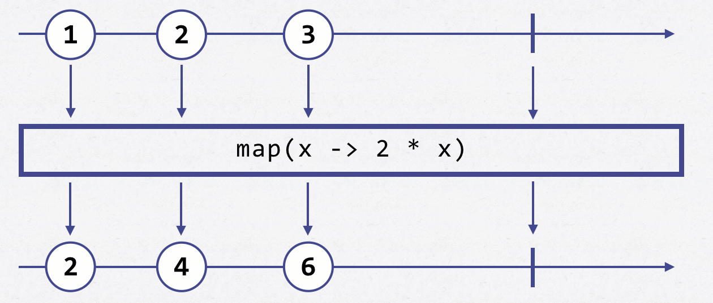
Observable<Integer> obs1 = ...
Observable<Integer> obs2 = obs1.map(x -> 2 * x)Marble Diagram Flatmap
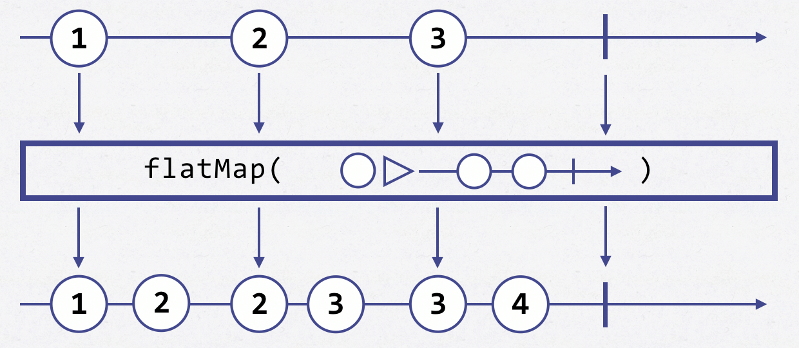
Observable<Integer> obs1 = ...
Observable<Integer> obs2 = obs1.flatMap(x -> Observable.just(x, x+1))Marble Diagram Zip
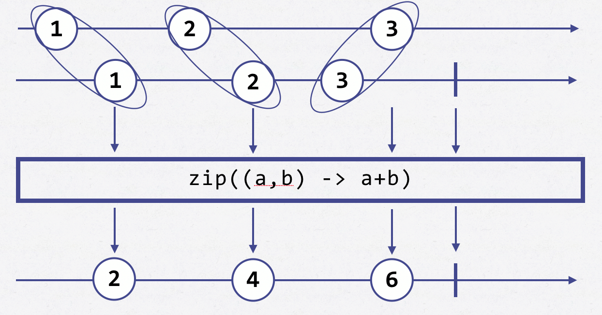
Observable<Integer> obs1 = ...
Observable<Integer> obs2 = obs1.zipWith((a,b) -> a+b)Observable method summary
Backpressure
Reactive streams

http://www.reactive-streams.org
Reactive streams
Jdk9 Flow
"Until now, one missing category was "push" style operations on items as they become available from an active source." /Doug Lea
Spring Web Reactive
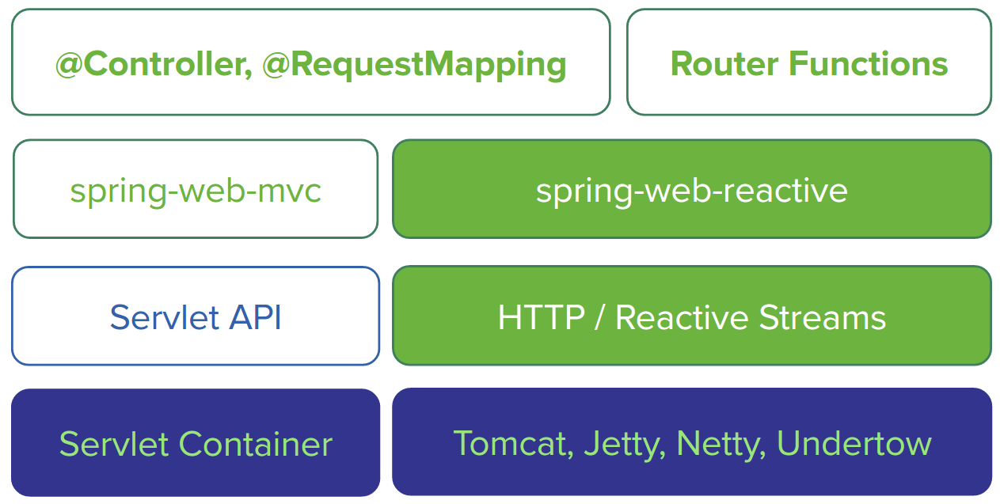Spring Web Reactive
@RestController
public class PersonController {
private final PersonRepository repository;
public PersonController(PersonRepository repository) {
this.repository = repository;
}
@PostMapping("/person")
Mono<Void> create(@RequestBody Publisher<Person> personStream) {
return this.repository.save(personStream).then();
}
@GetMapping("/person")
Flux<Person> list() {
return this.repository.findAll();
}
@GetMapping("/person/{id}")
Mono<Person> findById(@PathVariable String id) {
return this.repository.findOne(id);
}
}Conclusions
- Asynchronous programming is hard
- The Rx model provides abstractions to handle the complexity
- Rx is a valuble tool in the toolbox for the enterprise java developer.